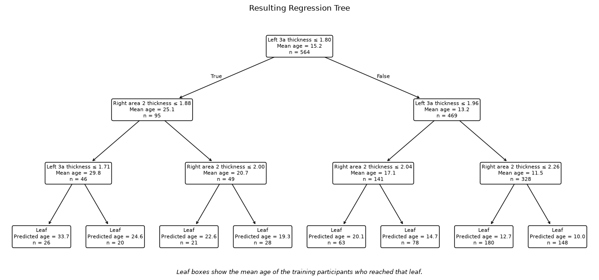
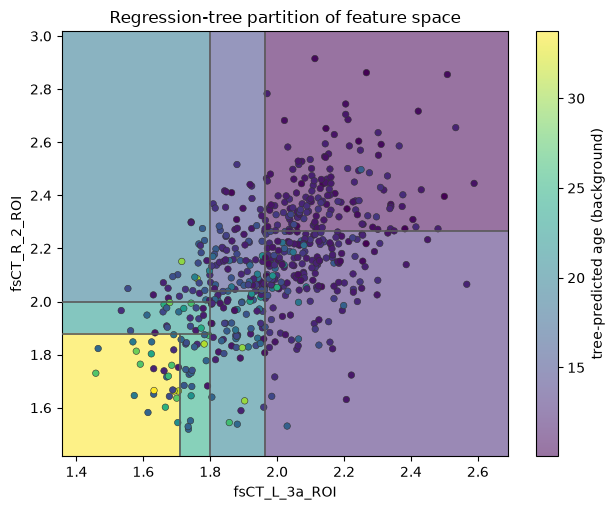
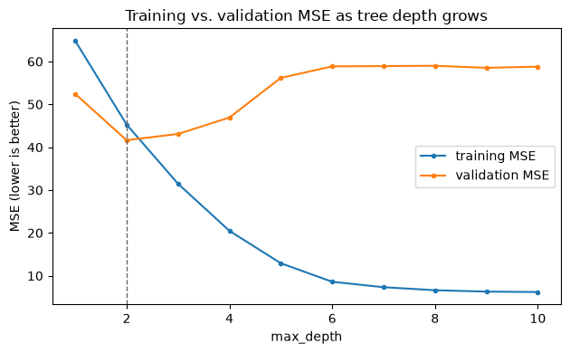
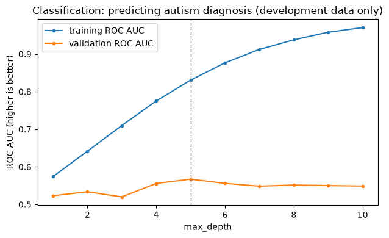

Exercise 6: Decision Trees#
Run or download this notebook
This page is fully readable as it is, and the interactive activities work here in the browser. To run or change the Python code, use the portable version of the notebook:
View or download the portable
.ipynbfor VS Code or Jupyter
The portable notebook keeps every Python analysis cell and swaps each embedded activity for a link back to this page.
What this notebook covers#
This is Exercise 6 of Machine Learning for Neuroscience. Exercise 6 introduces regression trees and the greedy algorithm used to build them. We will then compare a single tree with bagging and Random Forest models.
In this notebook you will:
examine how a tree divides feature space;
choose a split using MSE;
see how tree complexity affects overfitting;
compare a single tree, bagging, and Random Forest.
Prerequisites: Exercises 2, 4, and 5 (predicting age from cortical thickness, training/validation splitting, and regularization).
1. One Regression Tree#
We return to the same task as Exercises 2, 4, and 5: predicting a participant’s age at scan from cortical-thickness measurements. Earlier exercises fit a linear model to every predictor at once. A regression tree takes a different approach: it repeatedly divides the participants into groups using simple yes/no questions about one feature at a time, and predicts the average age within each final group.
A tree is built from three kinds of pieces:
a node is one point in the tree, holding a subset of the training participants;
each internal node tests one feature against one threshold (for example, “is this region’s average cortical thickness at most 1.8mm?”) and sends each participant left or right depending on the answer;
a leaf is a node that is not split any further; it predicts the mean target value among the training participants who reach it.
Unlike the linear and regularized models in Exercises 2, 4, and 5, decision trees do not require feature scaling: a tree only compares a feature’s own values against a threshold, so the unit or scale of that feature never changes which threshold is chosen.
data table: 1004 participants x 1446 columns
360 predictors
n_fit = 564 n_val = 189 n_test = 251 (test set untouched in this notebook)
# Two predefined predictors from the compact "sensorimotor core" bundle
# already used elsewhere in this course: the two primary somatosensory/motor
# cortical-thickness regions with the strongest training-partition
# correlation with age within that small, predefined bundle (not a search
# across all 360 predictors).
TREE_FEATURES = ["fsCT_L_3a_ROI", "fsCT_R_2_ROI"]
idx = [FEATURES.index(f) for f in TREE_FEATURES]
Xp_fit, Xp_val = X_fit[:, idx], X_val[:, idx]
tree = DecisionTreeRegressor(max_depth=3, min_samples_leaf=20, random_state=42)
tree.fit(Xp_fit, y_fit)
pred_val = tree.predict(Xp_val)
print(f"leaves = {tree.get_n_leaves()} depth = {tree.get_depth()}")
print(f"validation MSE = {mean_squared_error(y_val, pred_val):.1f} "
f"validation R2 = {r2_score(y_val, pred_val):.3f}")
leaves = 8 depth = 3
validation MSE = 46.0 validation R2 = 0.361
Tree diagram#
Each box shows the feature and threshold tested at that node (a leaf box shows its predicted
age instead), how many training participants reach it, and the mean age among them. The
diagram below uses short, display-only aliases for the two features – fsCT_L_3a_ROI is
shown as Left 3a thickness and fsCT_R_2_ROI as Right area 2 thickness – purely to
keep the boxes readable. The code above, and every other analysis in this notebook, keeps using
the real ABIDE column names.
# Short, display-only aliases used only inside the diagram below; the real
# ABIDE column names (TREE_FEATURES) are unchanged everywhere else.
FEATURE_ALIASES = {
"fsCT_L_3a_ROI": "Left 3a thickness",
"fsCT_R_2_ROI": "Right area 2 thickness",
}
fig, ax = plt.subplots(figsize=(13, 6))
format_tree_diagram(tree, TREE_FEATURES, FEATURE_ALIASES, ax)
ax.set_title("Resulting Regression Tree")
fig.text(
0.5, 0.005,
"Leaf boxes show the mean age of the training participants who reached that leaf.",
ha="center", fontsize=9, style="italic",
)
plt.tight_layout()
plt.show()

Two-dimensional partition plot#
Both predictors can be plotted directly, since there are only two: one on each axis. The background color shows what the tree would predict for any point in this space; the dots are the actual training participants, colored by their observed age. Medium-gray lines mark the exact boundary between adjacent predicted-age regions – each segment is drawn only across the region its own split actually divides, not as a full-height or full-width gridline.
A split on the horizontal-axis feature produces a vertical boundary. A split on the vertical-axis feature produces a horizontal boundary.
Standard regression-tree splits are axis-aligned: every individual boundary is a straight vertical or horizontal line, never diagonal or curved. Several rectangular regions together can still approximate a nonlinear relationship, one step at a time. Because every point inside one rectangular region receives the same prediction, regression-tree predictions are piecewise constant – flat within each region, with a jump at every boundary.
def draw_partition_boundaries(ax, tree, x1_range, x2_range, color="0.35", lw=1.2):
# Overlays the exact split boundaries on top of the colored prediction
# regions. Each segment is clipped to the bounding box of the parent
# node it belongs to, found by walking the tree and narrowing the box
# at every split -- so only the root's split legitimately spans the
# full plot; every other split is drawn only where it actually applies.
t = tree.tree_
def recurse(node_id, x1_min, x1_max, x2_min, x2_max):
if t.children_left[node_id] == -1:
return
feature, threshold = t.feature[node_id], t.threshold[node_id]
if feature == 0:
ax.vlines(threshold, x2_min, x2_max, color=color, linewidth=lw, zorder=3)
recurse(t.children_left[node_id], x1_min, threshold, x2_min, x2_max)
recurse(t.children_right[node_id], threshold, x1_max, x2_min, x2_max)
else:
ax.hlines(threshold, x1_min, x1_max, color=color, linewidth=lw, zorder=3)
recurse(t.children_left[node_id], x1_min, x1_max, x2_min, threshold)
recurse(t.children_right[node_id], x1_min, x1_max, threshold, x2_max)
recurse(0, x1_range[0], x1_range[1], x2_range[0], x2_range[1])
x1_grid = np.linspace(Xp_fit[:, 0].min() - 0.1, Xp_fit[:, 0].max() + 0.1, 300)
x2_grid = np.linspace(Xp_fit[:, 1].min() - 0.1, Xp_fit[:, 1].max() + 0.1, 300)
xx1, xx2 = np.meshgrid(x1_grid, x2_grid)
mesh_pred = tree.predict(np.column_stack([xx1.ravel(), xx2.ravel()])).reshape(xx1.shape)
fig, ax = plt.subplots(figsize=(6.4, 5.2))
mesh = ax.pcolormesh(xx1, xx2, mesh_pred, shading="auto", cmap="viridis", alpha=0.55)
ax.scatter(Xp_fit[:, 0], Xp_fit[:, 1], c=y_fit, cmap="viridis", edgecolor="0.2", linewidth=0.4, s=22)
draw_partition_boundaries(ax, tree, (x1_grid[0], x1_grid[-1]), (x2_grid[0], x2_grid[-1]))
plt.colorbar(mesh, ax=ax, label="tree-predicted age (background)")
ax.set_xlabel(TREE_FEATURES[0])
ax.set_ylabel(TREE_FEATURES[1])
ax.set_title("Regression-tree partition of feature space")
plt.tight_layout()
plt.show()

Think first
Why is every boundary in the plot above parallel to one axis?
Why does every rectangular region carry exactly one prediction?
Can several axis-aligned splits together approximate a curved relationship?
What may happen to a leaf’s prediction when very few participants reach it?
2. Build a Tree Greedily#
How does a tree decide which feature and threshold to split on? Consider one node containing \(n\) training observations with target values \(y_1, \dots, y_n\). A leaf at this node would predict their mean:
and its mean squared error is
For a proposed split into a left group of \(n_L\) observations and a right group of \(n_R\) observations (\(n_L + n_R = n\)), each with its own leaf mean and its own MSE, the split’s overall error is the size-weighted average of the two children’s MSE:
The tree chooses the feature and threshold that produce the largest reduction in MSE at the current node – the drop from the parent’s MSE to \(\operatorname{MSE}_{\mathrm{split}}\).
This procedure is called greedy: the algorithm chooses the best split available right now, at this one node. It does not look several splits ahead, and it never reconsiders a split it has already made.
Interactive activity: Build a Tree Greedily#
The activity below uses a small, simulated dataset – 16 observations on two continuous predictors, Brain measure 1 and Brain measure 2 – generated from a fixed formula (declared in the widget itself) so that age is associated with each feature without being perfectly determined by either one, and the two features visibly overlap in feature space rather than forming clean, separated groups. These are simulated values used to understand the algorithm, not ABIDE observations. It walks you through three nodes: the root, then one of its children, then the other. At each node, choose a feature and browse the candidate thresholds; the score card updates the weighted split MSE and MSE reduction as you go. Lock your choice, then reveal the greedy optimum for that node and compare. The activity itself always continues with the true greedy-optimal split, not your own proposal, so that later nodes reflect the actual tree the algorithm would build.
3. How Large Should the Tree Be?#
A tree can keep splitting until every leaf contains a single participant, fitting the training data almost perfectly – and generalizing poorly. Three settings control how large a tree is allowed to grow:
Hyperparameter |
Effect |
|---|---|
|
Limits how many successive splits any path from the root can have |
|
Prevents a leaf from being created with very few participants |
|
Prunes back branches that add only limited improvement, after growing |
The figure below fits a tree at each depth from 1 to 10 (the same fitting and validation partitions as Section 1), and tracks training and validation MSE.

depth= 1 leaves= 2 train MSE= 64.80 val MSE= 52.42
depth= 2 leaves= 4 train MSE= 45.28 val MSE= 41.64 <- lowest validation MSE
depth= 3 leaves= 8 train MSE= 31.47 val MSE= 43.09
depth= 4 leaves= 15 train MSE= 20.48 val MSE= 46.93
depth= 5 leaves= 26 train MSE= 12.92 val MSE= 56.18
depth= 6 leaves= 41 train MSE= 8.60 val MSE= 58.87
depth= 7 leaves= 54 train MSE= 7.33 val MSE= 58.93
depth= 8 leaves= 66 train MSE= 6.63 val MSE= 59.00
depth= 9 leaves= 78 train MSE= 6.30 val MSE= 58.52
depth=10 leaves= 85 train MSE= 6.21 val MSE= 58.80
Training MSE keeps falling as the tree grows deeper – a sufficiently deep tree can fit the training participants almost exactly. Validation MSE falls at first, reaches a minimum at a shallow depth, and then rises again: past that point, the tree is fitting patterns specific to these particular training participants rather than the underlying relationship. A deeper tree is more sensitive to exactly which participants happened to be in the training set, because each additional split is chosen from an ever-smaller, more idiosyncratic subgroup.
Think first
Which depth has the lowest training MSE?
Does validation MSE keep improving as depth grows, or does it turn back up?
Why is a deep tree more sensitive to exactly which participants are in the training set?
Which depth would you select if you could not look at test data at all?
eligible = 1004 development = 753 outer test (excluded) = 251

depth= 1 train ROC AUC=0.574 val ROC AUC=0.523
depth= 2 train ROC AUC=0.642 val ROC AUC=0.534
depth= 3 train ROC AUC=0.710 val ROC AUC=0.520
depth= 4 train ROC AUC=0.775 val ROC AUC=0.556
depth= 5 train ROC AUC=0.831 val ROC AUC=0.567 <- highest validation ROC AUC
depth= 6 train ROC AUC=0.877 val ROC AUC=0.556
depth= 7 train ROC AUC=0.912 val ROC AUC=0.549
depth= 8 train ROC AUC=0.938 val ROC AUC=0.552
depth= 9 train ROC AUC=0.958 val ROC AUC=0.550
depth=10 train ROC AUC=0.970 val ROC AUC=0.549
The regression curve above and this classification curve are two genuinely
different prediction tasks – predicting age versus predicting autism
diagnosis – each fit at every max_depth from 1 to 10 with a fixed
min_samples_leaf, but scored differently: the regression curve above uses
one fixed training/validation split (Section 1’s dev split), while this
classification curve uses 5-fold stratified cross-validation within
Exercise 3’s training-and-validation data (753 of the 1004 eligible
participants) – Exercise 3’s own locked 251-participant outer test set is
excluded before any fold is formed and is never used to compare depths. On
this configuration, validation ROC AUC is highest at max_depth=5
(0.567), 0.034 above max_depth=2’s validation ROC AUC (0.534). Two things
are worth being explicit about:
ROC AUC is higher-is-better, the opposite of MSE, which is lower-is-better – keep that in mind comparing the two curves’ shapes.
Which depth validates best depends on the particular target, dataset, and validation scheme. This pair of curves selecting different depths does not mean classification is inherently more (or less) complex than regression – it means these two tasks happened to prefer different amounts of tree complexity here.
(Both validation ROC AUC values here are modest and close to 0.5 – chance-level separation between autism and control participants from cortical thickness alone in this cohort. The point of this curve is the depth-selection contrast, not a strong classifier.)
4. From One Tree to an Ensemble#
A single tree can be sensitive to the training sample#
Fitting the same tree settings to several different, overlapping subsamples of the same training pool can select a different feature or threshold at the root – not because anything about the algorithm changed, but because a different set of participants was available to compare candidate splits against.
# Three deterministic subsamples of the fitting partition (70% each, drawn
# without replacement) -- not merely different random_state values on
# identical data.
pool_size = len(y_fit)
for seed in [0, 1, 2]:
rng = np.random.RandomState(seed)
sample_idx = rng.choice(pool_size, size=int(round(0.7 * pool_size)), replace=False)
t = DecisionTreeRegressor(max_depth=6, min_samples_leaf=5, random_state=42)
t.fit(X_fit[sample_idx], y_fit[sample_idx])
root_feature = FEATURES[t.tree_.feature[0]]
root_threshold = t.tree_.threshold[0]
print(f"training sample seed={seed}: root split on {root_feature} <= {root_threshold:.3f}")
training sample seed=0: root split on fsCT_R_V2_ROI <= 1.975
training sample seed=1: root split on fsCT_R_3a_ROI <= 1.596
training sample seed=2: root split on fsCT_R_V2_ROI <= 2.020
Two of the three samples above happen to choose the same root feature at a
different threshold; the third chooses a different feature entirely. This is
what “sensitive” or “high variance” means for a single tree: small
changes in which participants are available to train on can change early
splits and, from there, the rest of the tree. Refitting the identical tree
to identical data with a different random_state would not, by itself,
demonstrate this – a DecisionTreeRegressor fit is deterministic given its
training data; what varies above is the training sample itself.
Bagging#
Bagging (bootstrap aggregating) addresses this sensitivity directly:
draw many bootstrap samples (random samples of the same size, drawn with replacement) from the training data;
fit one tree to each bootstrap sample;
predict with every tree;
average their predictions.
For regression, with \(B\) trees:
Averaging many trees, each somewhat different because each saw a different bootstrap sample, mostly cancels out each individual tree’s idiosyncrasies. Bagging primarily reduces variance – the sensitivity to the training sample demonstrated above – rather than changing what any one tree could represent.
Random Forest#
Random Forest combines bootstrap sampling with random feature subsets at each split.
Bagged trees can still end up fairly similar to one another when the same few predictors dominate every bootstrap sample: if one feature is consistently the best available split, most bootstrap trees will choose it at the root regardless of which participants were resampled. Random Forest adds a second source of randomness – at every split, only a random subset of the available features is even considered – which makes the individual trees less correlated with one another. Averaging less-correlated predictions can improve on bagging, but it is not guaranteed to: this is an empirical question, examined directly in Section 6.
Model |
Training samples |
Features considered at a split |
Prediction |
|---|---|---|---|
Single tree |
One training sample |
All available features |
One tree |
Bagging |
Bootstrap sample per tree |
All available features |
Average |
Random Forest |
Bootstrap sample per tree |
Random feature subset |
Average |
5. One Tree or Many?#
The activity below compares a single regression tree, bagging, and a Random Forest on the real age-prediction task, using the full 360-predictor recipe. Each training replicate is a fixed proportion of the fitting partition, drawn without replacement at a predefined seed – a genuinely different sample of participants, not just a different model seed on identical data. Every model within a replicate trains on the identical subset and is scored on the identical, fixed validation participants; bagging and Random Forest additionally perform their own internal bootstrap sampling. The top two panels aggregate across all five training replicates; the observed-versus-predicted panel below them uses one fixed training sample, so it stays comparable across the models and tree counts you choose.
Think first
Which model should change the most across different training replicates?
Will averaging many trees improve every individual prediction, or just the average?
What should happen to validation MSE as more trees are added?
Why might bagged trees remain fairly similar to one another?
What additional randomness does Random Forest introduce beyond bagging?
6. A Fair Model Comparison#
As one further check, the three models are compared using identical cross-validation folds over the full eligible cohort, with fixed complexity settings for every model – no scaling (trees do not need it), the same tree complexity for the single tree and for every tree inside bagging and the Random Forest, the same number of trees for bagging and Random Forest, and an explicit feature-subsampling size for the Random Forest so its distinction from bagging is real rather than nominal. No setting here was chosen by looking at the test set.
| Mean CV MSE | MSE variability (sd) | Mean R2 | |
|---|---|---|---|
| Model | |||
| Single tree | 57.443 | 3.755 | 0.308 |
| Bagging | 32.677 | 10.046 | 0.637 |
| Random Forest | 34.330 | 10.599 | 0.619 |
On this cohort and these settings, bagging and the Random Forest both substantially outperform the single tree (roughly halving mean cross- validation MSE), matching what Section 5’s activity already showed. Between the two ensembles, bagging scored marginally better than the Random Forest here – a reminder that ensemble advantages over a single tree are consistent in this example, but a Random Forest outperforming bagging is not guaranteed. Both are empirical outcomes, not properties either method is entitled to by construction.
7. What Should We Remember?#
A regression tree splits feature space with axis-aligned boundaries: one feature and one threshold per split.
Tree predictions are piecewise constant – flat within each leaf’s region.
A deep tree can have very low training error and high variance: it becomes sensitive to exactly which participants were available to train on.
Bagging fits many trees to bootstrap samples of the training data and averages their predictions.
Random Forest does the same, but also restricts each split to a random subset of the available features.
Averaging many trees reduces variance, whether or not the Random Forest’s extra randomization improves on bagging in a given case.
A tree-derived feature-importance score reflects how useful a feature was for prediction in this particular model; it does not, by itself, establish a feature’s scientific or causal importance.
Bagging and Random Forests build trees independently and average them. In the next exercise, boosting will build trees sequentially, with each new tree focusing on the errors left by earlier trees.
Questions to take away#
Why can a forest generalize better than any one of its individual deep trees?
What does Random Forest add on top of what bagging already does?
Why are the trees inside a Random Forest deliberately made different from one another?
When might a single, shallow tree still be the better choice?
Based on how bagging and Random Forest each build their trees independently and then average them, how do you expect boosting’s sequential approach to differ?